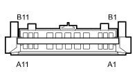

D20 DASHBOARD/REAR COUPLING ( REAR )
- Path
- Electrical equipment > 3 CONNECTORS > D INTERMEDIATE COUPLINGS > D020 DASHBOARD/REAR COUPLING > D20 DASHBOARD/REAR COUPLING ( REAR )
- Kind
- connector pinout (pin -> wire colour -> other end)
- Applies to
- engines: 1.2 8v, 1.6 16v, 1.3 JTD 16V, 1.9 JTD 8V, 1.9 DIESEL; all production periods; only with equipment: HIGH car radio
- Interactive page
- https://sloeber94.github.io/elrnDB-fDbl/en/#/223004515
Applies to: engines: 1.2 8v, 1.6 16v, 1.3 JTD 16V, 1.9 JTD 8V, 1.9 DIESEL; all production periods; only with equipment: HIGH car radio

Wiring | Colour |
|---|---|
See 25 REAR | GRIGIO (grey) |